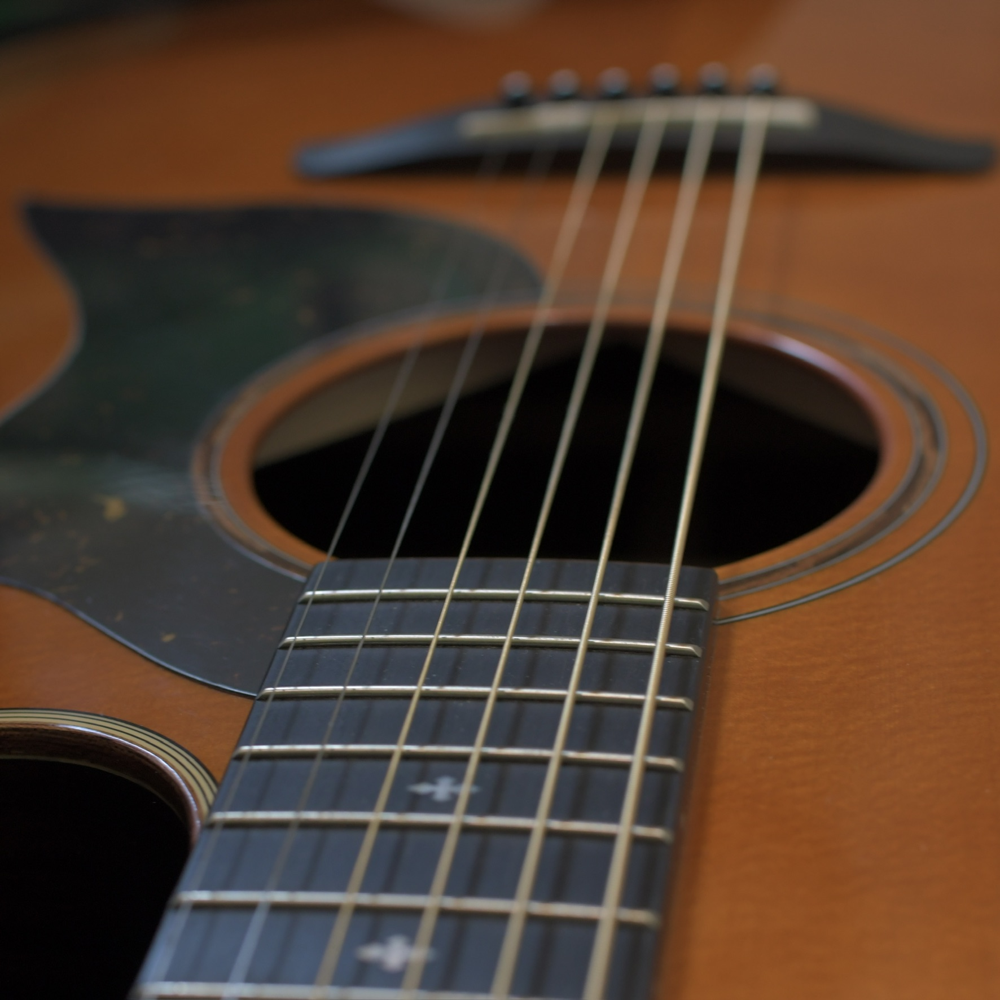
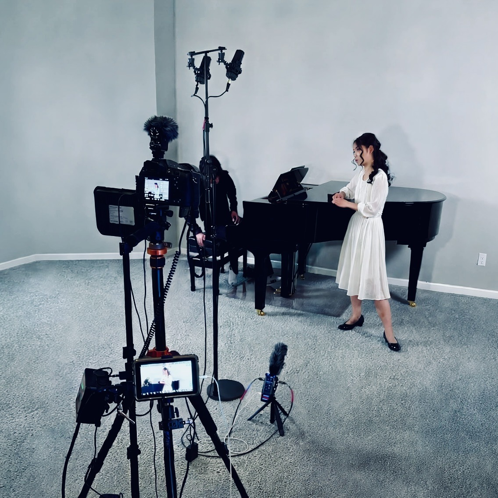
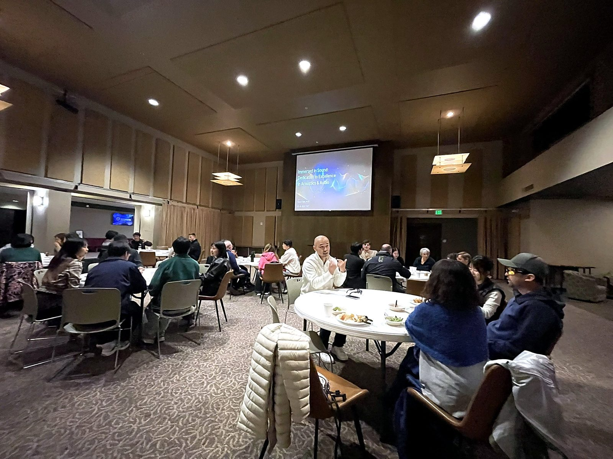
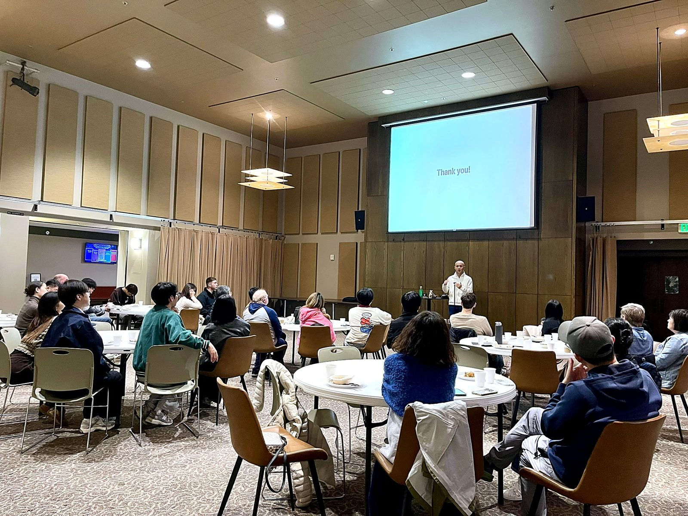

アメリカ音響技術の最前線で30年。Meta・Sonos・Bose・SkullcandyでR&Dをリードし、31件の特許・出願、$50M超の資金獲得の実績を持つ電気音響工学の博士が、あなたの技術戦略に伴走します。 30 years at the forefront of American audio technology. Having led R&D at Meta, Sonos, Bose, and Skullcandy — with 31 patents and applications and over $50M in innovation capital secured — this Ph.D. in electroacoustics partners with you on your technology strategy.
コンシューマー・エレクトロニクス分野での30年以上の経験を経て、技術に対する私の視点は「単なる利便性の追求」の先へと広がっています。 After over 30 years in the consumer electronics sector, my perspective on technology is expanding beyond the pursuit of "mere convenience."
TNKSNDでは、音の技術を軸に、次の3つの活動を展開しています。 At TNKSND, our work centers on sound technology across three areas.
企業の研究開発、ハードウェア開発、経営層向けの技術戦略を支援します。現場に伴走し、チームが自律的に動ける組織づくりを共に進めます。 Supporting corporate R&D, hardware development, and executive technology strategy — working alongside your team to build an organization that moves with autonomy.
培ってきた音響・ロボティクス技術を、人間の尊厳を支えるケア・介護の現場へ応用する研究開発に取り組んでいます。 Applying our acoustics and robotics expertise to research and development for care settings — technology in service of human dignity.
音楽家を目指す学生のために、手の届く価格でプロフェッショナル品質のボーカル・ピアノ録音を提供しています。 Professional-grade vocal and piano recording for aspiring musicians — at an accessible price.
今後の目標として、コンサルティング事業を通じて得た利益と影響力を、次世代の若手音楽家や留学生を支援するプログラムの立ち上げに活かしていきたいと考えています。従来の音響製品の開発に留まらず、技術を社会課題の解決に活かしていくことを目指しています。 Looking ahead, we hope to channel the proceeds and reach of our consulting practice into building a program that supports the next generation of young musicians and international students — pursuing technology that solves social challenges, far beyond traditional product development.
プリンシパル・コンサルタント Principal Consultant
マサチューセッツ大学で電気工学（電気音響工学）の博士号を取得。AI・家電・ウェアラブル・ロボティクスの境界を広げる企業に、戦略的コンサルタントとして伴走しています。 I hold a Ph.D. in Electrical Engineering (Electroacoustics) from the University of Massachusetts, and partner as a strategic consultant with organizations pushing the boundaries of AI, consumer electronics, wearables, and robotics.
私のコンサルティングの原点は、まだ30歳前半だった2007年、米国東海岸の企業で感じた強いフラストレーションにあります。当時、日本人として米国本社と東京支社を行き来する中で、本社の意図が東京支社に十分に伝わらない一方、東京支社のメンバーは本社との連絡係のような役割に留まり、本来の専門性を発揮する機会を失っている現場を目の当たりにしました。優秀な日本の人材の才能が活かされていない現実に、強いもどかしさを覚えました。以来、日米の橋渡しとなる仕事に携わる中で、日本の強みをいかに米国企業に届けるかを考え続けてきました。文化の壁を口実にするのではなく、一人のリーダーがいかに誠実に信頼関係を築けるか。この「修行の時期」に学んだ教訓が、現在の私の戦略的視座の土台となっています。 The origin of my consulting approach lies in a deep frustration I felt in 2007, in my early thirties, working for a U.S. company on the East Coast. Traveling between headquarters and the Tokyo branch as a Japanese professional, I watched headquarters’ intentions fail to reach Tokyo — while the Tokyo team, in turn, was confined to a liaison-like role, never given the chance to exercise its real expertise. I felt acutely that the talent of excellent Japanese professionals was going to waste. Since then, working as a bridge between Japan and the U.S., I have kept asking how Japan’s strengths can best reach American companies. Rather than using cultural barriers as an excuse, what matters is how sincerely a single leader can build trust. The lessons learned during this formative “training period” form the foundation of my strategic perspective today.
ユタ州のスタートアップに入社した2013年、激動の組織環境の中で私は「本当の幸せとは何か」を自問しました。その答えは、新製品の開発を通じて、映画を見て涙を流すような「感動の連鎖」を生み出せるかどうかにあると気づきました。
「大きな志を持ち、小さな失敗にこだわらない」。この精神を胸に、私は米国でゼロから研究チームを立ち上げ、まだ経験の浅かった現地の工場の技術者たちの育成にあたりました。人を育て、情熱を絶やさず、適切な目標を与えること。技術の背後にある人の感情を動かしてこそ、真のイノベーションが生まれると信じています。
In 2013, I joined a startup in Utah, and amid a turbulent organizational environment, I asked myself what true happiness really meant. I came to realize the answer lay in whether, through developing new products, I could spark a “chain of inspiration” — the kind that moves people to tears the way a great film does.
“Hold a grand vision; don’t get hung up on small failures.” With this spirit, I built a research team from scratch in the U.S. and took on developing engineers at still-inexperienced local factories. Develop people, keep their passion alive, and give them the right goals. I believe true innovation is born only when we move the human emotions behind the technology.
40代から50代にかけては、Metaをはじめとする世界最高峰の企業との関わりの中で、スマートグラスという新しい製品カテゴリのパイオニアとなり、世界でも数少ない優秀なエンジニアたちと共に、常に最先端の技術開発を進めてきました。「作る人の想い」をいかに言語化し、定量的データとしてプロダクトストーリーに埋め込むか——その追求を続けてきました。
利益や成功は、純粋に人を驚かせる技術へのこだわりの結果に過ぎません。本当に良い製品は一朝一夕には生まれません。5年、10年先を見据えた長期的視野で技術開発に取り組んでこそ生まれるのだと実感しました。そして、そうした現場には必ずと言っていいほど、自我を捨てて部下に安定した環境を提供するリーダーが存在しました。グローバル競争の最前線で学んだのは、こうした「技術に対する誠実な想い」が組織の成否を分けるということでした。
In my forties and fifties, working with world-leading companies including Meta, I became a pioneer of an entirely new product category — smart glasses — and kept pushing the frontiers of technology alongside some of the finest engineers in the world. I pursued one question relentlessly: how to put into words the passion of the people who build, and embed it into the product story as quantitative data.
Profit and success are merely the byproduct of an obsession with technology that genuinely amazes people. I came to realize that truly great products are not born overnight — they emerge only from R&D pursued with a 5- to 10-year horizon. And behind such work, almost without exception, stands a leader who sets aside ego to give their team a stable environment. What I learned at the front lines of global competition is that this sincere devotion to technology is what separates organizations that thrive from those that don’t.
現在は、音響工学の深い知見とオーディオ×ケアテック領域のビジョンを融合させ、次世代の技術革新を支援しています。私のコンサルティングは、単なるアドバイスの提供ではありません。
かつて私自身が現場で「自由とスピードを奪われること」に最も苦しんだからこそ、クライアントのチームが自律的に、かつ情熱を持って動ける組織文化を共に作り上げる「伴走」を大切にしています。逆境においても恐れず、大胆に一歩を踏み出す。貴社の技術と人が持つ潜在能力を最大限に引き出し、世界に新たな「感動の連鎖」を生み出すパートナーでありたいと考えています。
Today, I merge my deep expertise in acoustic engineering with a vision for the Audio × Care-Tech space to support next-generation technological innovation. My consulting is not merely about giving advice.
Having suffered the most from "being stripped of freedom and speed" in the field, I deeply value "running alongside" my clients to co-create an organizational culture where teams can operate autonomously and passionately. Stepping forward boldly without fear even in adversity, I strive to be a partner who maximizes the potential of your technology and people to create a new "chain of inspiration."
Meta、Sonos、Bose、Skullcandyなどの世界トッププラットフォームにおける研究開発の軌跡。音響設計、ビームフォーミング、ノイズ制御に関する31の特許および出願。 The trajectory of R&D across top global platforms including Meta, Sonos, Bose, and Skullcandy. 31 patents and filings spanning acoustic design, beamforming, and noise control.
企業のR&D推進、ハードウェア開発、そして経営層向けの技術戦略アドバイザリー。 Elite technical consulting and strategic advisory for organizations pushing the boundaries of hardware innovation.
クライアントが抱える技術的な問題解決へのアドバイスや、新製品設計における最先端の音響アイデアと戦略を共有します。コンセプト立案から量産化までの複雑なプログラム管理を支援します。 Providing expert advice for technical problem-solving and sharing cutting-edge acoustic concepts and strategies for new product design, including complex "0 to 1" program management.
コンサルティングを予約する Book a Consultation企業の技術戦略、R&D部門の構築、イノベーション推進について大局的な助言を提供します。社外取締役や技術顧問として経営陣と共に持続的な成長を牽引します。 Providing high-level guidance on technical strategy, R&D architecture, and innovation. Available for external board member or technical advisor roles to help executive teams drive sustainable growth.
アドバイザリーについて相談する Discuss Advisory Roles応用研究 Applied R&D
30年以上にわたり培ってきた音響・オーディオ技術を、人間の尊厳を支えるケアの現場へ。 Bringing 30+ years of acoustics and audio engineering to care settings — where sound supports human dignity.
ALSをはじめとする難病と向き合う方々、そのご家族、そして介護者のために。「伝えたい」「聴きたい」「つながりたい」という願いを、音の技術で支えるアプリの開発に取り組んでいます。 For people facing ALS and other serious conditions, their families, and their caregivers — we are developing apps that use the power of sound to support the fundamental wish to express, to hear, and to stay connected.
「『やりたい』を、『できた』まで届ける。」ケアテック全体のビッグピクチャーと、5つの小さな入口のストーリー。 “From ‘I want to’ to ‘I did it.’” The big picture of Care Tech — the story behind five small starting points.
ストーリーを読む Read the story失われる前に声を残し、その人らしい声で伝え続けるために。 Preserving a person’s own voice before it is lost, so they can keep speaking as themselves.
遅れのない自然なやり取りを支えるリアルタイム音響処理。 Real-time audio processing for natural, delay-free interaction.
生活音の中から必要な声だけを捉えるマイクロホンアレイ技術。 Microphone-array technology that isolates the voice that matters amid everyday noise.
身体に寄り添うデバイスのための小型・省電力な音響設計。 Compact, low-power acoustic design for devices worn close to the body.
※本ページは研究開発の紹介であり、医療機器としての効能・効果を謳うものではありません。 Note: this page describes research and development efforts; it makes no claims regarding medical device efficacy.
レコーディング支援 Recording Support
音楽家を目指す学生のための、プロフェッショナル品質のボーカル・ピアノ録音。 Professional-grade vocal and piano recording for aspiring musicians.
オーディションや入試のための録音は、演奏そのものと同じくらい重要です。30年にわたる音響エンジニアリングの経験を活かし、あなたの音楽の魅力を最大限に引き出す録音を提供します。ご希望に応じて、録音を当サイト上で公開することも可能です。 A recording made for auditions and entrance exams matters as much as the performance itself. Drawing on 30 years of audio engineering experience, we capture your music at its most beautiful — and can publish the recording on this site if you wish.
スタジオの楽器 In the Studio


スタジオ機材 Studio Equipment
声楽やオーディション用の高品質なボーカル録音。録音データの公開サポートも行います。 High-quality vocal recording for auditions and applications, with optional publishing support.
グランドピアノの豊かな響きを捉える本格的なピアノ録音を準備中です。 Full-scale grand piano recording, capturing the instrument’s rich resonance — currently in preparation.
これまでにサポートした学生たちは、次のような音楽関連プログラムに合格しています。 Students we have supported have earned admission to music programs including:
アウトリーチ Outreach
音響の魅力を、地域の皆さんと分かち合う活動。 Sharing the wonder of sound with our local community.
2025年11月、ワシントン州ベルビューでクイズ形式の講演「Immersed in Sound: Dedication to Excellence in Acoustics & Audio」を開催し、音響学とオーディオの面白さを地域の皆さんと共有しました。TNKSNDでは、こうした地域に根ざした活動も大切にしています。 In November 2025, we held “Immersed in Sound: Dedication to Excellence in Acoustics & Audio,” a quiz-style talk in Bellevue, Washington exploring the world of acoustics and audio with our neighbors. At TNKSND, grassroots community activities like this are close to our hearts.


日米を跨ぐ技術コンサルティングのご相談はもちろん、人の尊厳を支えるケアテックの共創や、次世代の音楽家支援についても、お気軽にお問い合わせください。 Whether it's bespoke consulting across the US and Japan, collaborating on care technology that supports human dignity, or supporting the next generation of musicians — reach out and let's talk.
EMAIL US